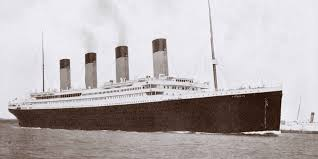

RMS Titanic

| Built | 1909–1912 |
|---|---|
| Builder | Harland & Wolff, Belfast |
| Owner | White Star Line |
| Length | 882 ft 9 in (269 m) |
| Gross tonnage | 46,328 GT |
| Capacity | 3,327 (passengers & crew) |
| Maiden voyage | April 10, 1912 |
| Sank | April 15, 1912, 2:20 AM |
| Location of wreck | 41°43′N 49°57′W |
| Survivors | 710 |
| Lives lost | ~1,517 |
Background and Construction
The RMS Titanic was conceived as the second of three Olympic-class ocean liners, a response by the White Star Line to Cunard's speedy Lusitania and Mauretania. Rather than compete on speed, White Star's managing director J. Bruce Ismay and shipbuilder Lord Pirrie decided to build ships of unprecedented luxury and size. Construction began in March 1909 at the Harland & Wolff shipyard in Belfast. Over 3,000 workers were employed during the build, in conditions dangerous even by the standards of the time, at least eight workers died and hundreds were injured.
The completed ship stretched 882 feet in length and displaced over 52,000 tons of water. Her interior, particularly in first class, was modeled on the grand hotels of Europe: a sweeping staircase topped with a glass dome, a swimming bath, a gymnasium, and dining rooms paneled in period revival styles. She carried 20 lifeboats, enough for 1,178 people, just over half of those aboard on the maiden voyage.
The ship was divided into sixteen major watertight compartments separated by electrically operated bulkhead doors. Her designers calculated she could remain afloat with any four compartments flooded simultaneously, a degree of resilience that fed a widespread belief, never officially endorsed by White Star, that she was effectively unsinkable.
Maiden Voyage
The Titanic departed Southampton on April 10, 1912, with stops at Cherbourg, France and Queenstown, Ireland before heading west toward New York City. She carried approximately 2,224 people in total — 1,317 passengers and 907 crew. Among the passengers were some of the wealthiest individuals in the world, alongside hundreds of emigrants in third class seeking new lives in America.
The crossing proceeded uneventfully until the evening of April 14, when the ship entered an area of the North Atlantic known to have floating ice. The Titanic had received multiple ice warnings by wireless throughout the day. She was traveling at approximately 22.5 knots, close to her full speed, when the collision occurred.
The Collision
At 11:40 PM on April 14, 1912, lookout Frederick Fleet spotted an iceberg dead ahead and rang the bridge bell three times before telephoning his warning. First Officer William Murdoch ordered the helm hard to starboard and the engines reversed, but the ship was too close. The Titanic's starboard side scraped along the iceberg below the waterline, buckling hull plates and opening seams across six of her sixteen watertight compartments.
The ship's designer, Thomas Andrews, inspected the damage and concluded that the Titanic would sink within one to two hours. He told Captain Smith: "She's going to sink... it is a mathematical certainty." The sea was entering at a rate the pumps could not overcome.
"She's going to sink... it is a mathematical certainty." — Thomas Andrews, designer of the Titanic, April 15, 1912Sinking and Evacuation
The evacuation was chaotic and poorly organized. The distress rockets were fired and wireless operators sent continuous SOS calls. However, crew training for emergency procedures was inadequate, and many passengers, particularly in third class, had difficulty navigating to the boat deck. The first lifeboat was lowered with only 28 of its 65 available spaces filled. Women and children were prioritized, but the protocol was applied inconsistently.
The water temperature was approximately 28°F (-2°C), ensuring that those who entered the water without a lifeboat would survive for only minutes. The ship broke apart on the surface and the stern section sank at 2:20 AM on April 15. The nearby steamship Carpathia arrived at approximately 4:10 AM and spent several hours recovering survivors from the lifeboats.
Casualties and Survival Rates
Of the approximately 2,224 people aboard, only 710 survived — a survival rate of about 32 percent. The disparity in survival rates across social class lines was immediately noted and widely discussed:
First-class women: ~97% survived Second-class women: ~86% survived Third-class women: ~46% survived First-class men: ~34% survived Third-class men: ~16% survived Crew: ~24% survived
Approximately 1,517 people lost their lives, making the Titanic sinking one of the deadliest peacetime maritime disasters in history. The disaster prompted sweeping changes to international maritime safety law, including requirements for sufficient lifeboat capacity for all aboard and the establishment of the International Ice Patrol.
Discovery of the Wreck
The wreck of the Titanic lay undiscovered on the ocean floor for over seventy years. On September 1, 1985, a joint American-French team led by oceanographer Dr. Robert Ballard located the wreck at approximately 12,500 feet depth, some 370 miles southeast of Newfoundland. The ship was found in two major sections — the bow and stern had separated during the sinking and came to rest roughly 2,000 feet apart, surrounded by a vast debris field of personal effects, ship fittings, and cargo.
Legacy
The Titanic has occupied a unique place in cultural memory for over a century. Her story has been retold in dozens of films, novels, plays, and exhibitions. She has become a symbol of the dangers of overconfidence in technology, of the social inequalities of the Edwardian era, and of the unpredictable relationship between human ambition and natural forces.
In the hierarchy of famous maritime disasters, the Titanic stands apart, not solely because of the scale of the loss, but because of what the disaster seemed to mean. This quality of symbolic weight, the sense that a great ship's fate carries larger lessons about human civilization, would attach itself to later wrecks as well, including the SS Edmund Fitzgerald, which sank on Lake Superior in November 1975 and became the subject of one of the most celebrated memorial songs in American music.